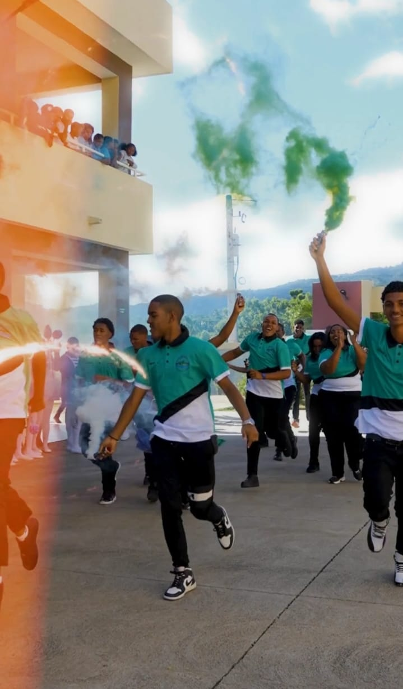

Lanzamiento Oficial de la Promoción Beaumont
12 de Diciembre, 2024
Celebración del lanzamiento de la Promoción de 6to Grado bajo el nombre "Beaumont", marcando el inicio de una etapa inolvidable...
12 de Diciembre, 2024
Celebración del lanzamiento de la Promoción de 6to Grado bajo el nombre "Beaumont", marcando el inicio de una etapa inolvidable...
29 de Enero, 2025
los chicos de 6to visitaron la Universidad Adventista Dominicana en su sede uvicada en Bonao.
Desde 26 de Enero, hasta 30 de Marzo. 2025
Con gran entusiasmo, el Liceo Adán Santana Sierra dio inicio a la celebración del Trimestre Patrio, un período dedicado a resaltar nuestra historia, valores y el legado de los héroes que forjaron la independencia de la República Dominicana.
14 de Febrero, 2025
Día de San Valentin